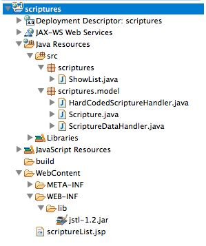

PART TWO - EXAMPLE: SCRIPTURE APPLICATION (BUILDING A MODEL)
INTRODUCTION
From the first part of this tutorial, we have created a simple servlet and JSP to display a list of scriptures. In that example, we pulled all of the logic of building the list out of the View (the JSP) so that the JSP simply renders the list for the user.
In this part of the tutorial, we will further encapsulate the scriptures and the logic around the list creation into the Model component of our MVC approach, leaving the servlet to simply function as a Controller, getting a request from the user, then getting data from the Model, and passing it to the View to be rendered.
Encapsulating the a scripture object
To this point, we have been using String's to represent each scripture in our list. Now, we will encapsulate this into a class to provide additional functionality and future flexibility.
To emphasize the separation between the Controller and the Model, we will create a separate sub-package for the classes in our model. Right-click the "scriptures" package, and select New -> Package. Enter the name "scriptures.model", which will create a sub-folder underneath "scriptures" called "model"
Right click the "model" package, and select New -> Class, and type the name "Scripture" as the class name. Notice that this is a regular Java class, there is nothing special about it that makes it unique to servlets or JSPs.
In this class we can create three private fields as follows:
private String book;
private int chapter;
private int verse;
Then we can create getters and setters for these fields, using the standard naming convention (i.e., getBook, setBook). Using this naming convention is critical as we will see later. We can also create a default no-argument constructor and also, for our convenience, a constructor that will take and set all three parts of the scripture at once. For simplicity, in this tutorial we will not perform error checking on the setting of these values.
The complete class now looks as follows:
package scriptures.model;
public class Scripture {
private String book;
private int chapter;
private int verse;
public Scripture(){
setBook("");
setChapter(1);
setVerse(1);
}
public Scripture(String book, int chapter, int verse) { this.setBook(book); this.setChapter(chapter);this.setVerse(verse);
}
public String getBook() {
return book;
}
public void setBook(String book) {
this.book = book;
}
public int getChapter() {
return chapter;
}
public void setChapter(int chapter) {
this.chapter = chapter;
}
public int getVerse() {
return verse;
}
public void setVerse(int verse) {
this.verse = verse;
}
}
Using the Scripture Class in our servlet and JSP
With the new scripture class, we can change the ShowList servlet to use a List of "Scriptures" rather than a list of Strings. The body of the doGet method then looks as follows (of course, we also need to include "import scriptures.model.Scripture;" at the top):
List<Scripture> scriptures = new ArrayList<Scripture>();
scriptures.add(new Scripture("Proverbs", 3, 5));
scriptures.add(new Scripture("Doc. & Cov.", 112, 10));
scriptures.add(new Scripture("John", 7, 17));
request.setAttribute("scriptures", scriptures);
request.getRequestDispatcher("scriptureList.jsp").forward(request, response);
At this point, we can run the servlet with the same JSP as before, but instead of seeing the scriptures, we will see something like the following:
Scriptures:
scriptures.model.Scripture@14985016
scriptures.model.Scripture@1bb1deea
scriptures.model.Scripture@3aa1e2da
The problem here is that we did not override the toString method on the class, so it does not render it as we might like. We can add the following method to the Scripture class:
@Override
public String toString() {
return book + " " + chapter + ":" + verse;
}
After adding this method, running the servlet produces the following:
Scriptures:
Proverbs 3:5
Doc. & Cov. 112:10
John 7:17
Adding customization to the View
If we wanted to customize the list of the scriptures, so that it did not use the default toString method, we can alter the JSP to use the different components individually. For example, suppose we wanted to make the book name bold. Rather than rendering the list as before:
<c:forEach var="scripture" items="$[scriptures}">
${scripture}<br >
<c:forEach>
We can change it to get each part of the scripture separately as follows:
</c:forEach var="scripture" items="${scriptures}">
<strong>${scripture.book}</strong> ${scripture.chapter}:${scripture.verse}<br />
</c:forEach>
This will show the book name as "strong" (bold) text along with the chapter and verse, when running the servlet. Note that we used the property name (e.g., "book") directly, rather than using a getter (e.g., "getBook()"). This is not directly accessing the private field, but is in fact calling the proper getter, because we have used the standard naming convention.
Further separating the Model from the Controller
Even though we have encapsulated the scriptures into a class, we still have much of the application logic (the building of the list) in our Controller (the servlet). To further separate the two, we can create another class in our "scriptures.model" package, named, "ScriptureDataHandler".
In this class, we can then add a method, such as "getFavoriteScriptures()" to return a List of Scriptures.
The complete class then looks as follows:
package scriptures.model;
import java.util.ArrayList;
import java.util.List;
public class ScriptureDataHandler {
public List<Scripture> getFavoriteScriptures() {
List<Scripture> scriptures = new ArrayList();
scriptures.add(new Scripture("Proverbs", 3, 5));
scriptures.add(new Scripture("Doc. & Cov.", 112, 10));
scriptures.add(new Scripture("John", 7, 17));
return scriptures;
}
}
Then, the doGet method of the servlet can be refactored to the following:
protected void doGet(HttpServletRequest request, HttpServletResponse response)
throws ServletException, IOException {
ScriptureDataHandler handler = new ScriptureDataHandler();
request.setAttribute("scriptures", handler.getFavoriteScriptures());
request.getRequestDispatcher("scriptureList.jsp").forward(request, response);
}
We have now removed the logic of generating the list of scriptures from the Controller, and could now easily change the process of generating favorite scriptures without affecting the servlet or JSP in any way.
One further layer of abstraction
Even though we have created the ScriptureDataHandler class, and removed it's logic from the servlet, in the future, we may want to get lists of scriptures from different sources, such as a file or a database. To facilitate this, rather than having our "hard-coded" version of the class as the the data handler, we can have ScriptureDataHandler be an interface that provides the getFavoriteScriptures method, and create a new class "HardCodedScriptureHandler" that implements the interface.
The new interface would look as follows:
package scriptures.model;
import java.util.List;
public interface ScriptureDataHandler {
public List<Scripture> getFavoriteScriptures();
}
And the hard-coded class would look as follows:
package scriptures.model;
import java.util.ArrayList;
import java.util.List;
public class HardCodedScriptureHandler implements ScriptureDataHandler {
@Override
public List<Scripture> getFavoriteScriptures() {
List<Scripture> scriptures = new ArrayList<Scripture>();
scriptures.add(new Scripture("Proverbs", 3, 5));
scriptures.add(new Scripture("Doc. & Cov.", 112, 10));
scriptures.add(new Scripture("John", 7, 17));
return scriptures;
}
}
Finally, we can change the Servlet to use the new class and interface as follows:
protected void doGet(HttpServletRequest request, HttpServletResponse response)
throws ServletException, IOException {
ScriptureDataHandler handler = new HardCodedScriptureHandler();
request.setAttribute("scriptures", handler.getFavoriteScriptures());
request.getRequestDispatcher("scriptureList.jsp").forward(request, response);
}
With these changes in place, we can run the servlet, and view the scripture list as before.
The final project looks as follows in Eclipse:
Dependency Inversion
A few notes about this last change. By using an interface for our ScriptureDataHandler, if we want to change the list to come from a different source, we could easily change the instantiation of the "HardCodedScriptureHandler" to another class that implements the interface. And everything else remains the same. This further reduces the coupling between the concrete objects in the Model from the Controller.
We could add further separation, by pulling the instantiation of an actual, concrete scripture handler instance to another method, (using the Factory pattern or something similar), or even further to a configuration file of our program. This would allow us to select a completely different class without having to change the compilation of the program at all! This is a very powerful principle and could enable using one type of object for certain unit tests and another one for a staging or production environment. The ability to specify dependencies in this way is a version of the "Inversion of Control" principle, or Dependency Injection, and is a core element of what frameworks such as Spring, provide. We won't go into this idea further at this point, but you should be aware of this abstract, but powerful concept.